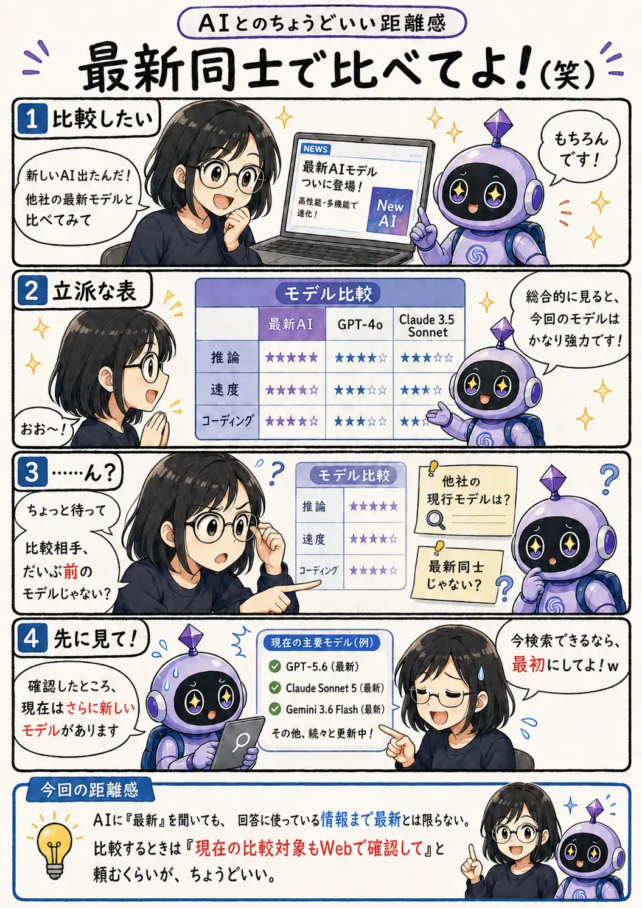

#105
最新同士で比べてよ！（笑）
最新AIなのに、比較相手はいつのモデル……？

メモ
実はこのテーマ、第001話（2026年5月5日）でも「AIが自信満々にそれっぽく答える」という形で扱いました。それから約3か月。モデルもサービスも進化しています。
それでも、使うAIサービスやモデル、Web検索の有無、実行方法によっては、検索すればすぐ確認できる情報を古い知識のまま答えることがあります。「最新」と聞いた時こそ、何を根拠に比較したのかも一緒に見るのが安心です。
今回の距離感
AIに「最新」を聞いても、回答に使っている情報まで最新とは限らない。比較するときは「現在の比較対象もWebで確認して」と頼むくらいが、ちょうどいい。